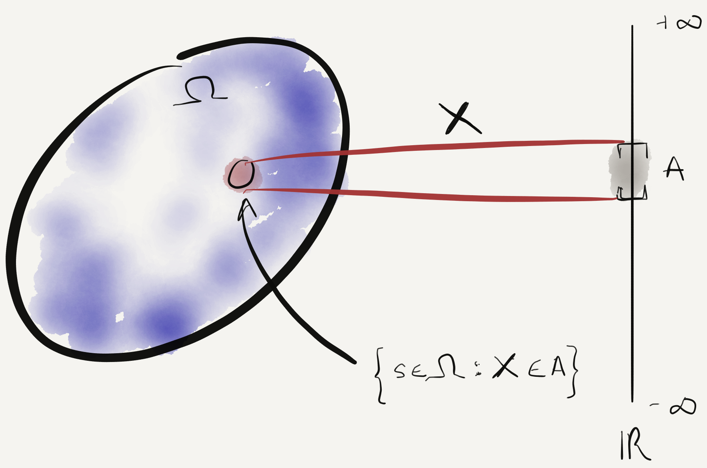
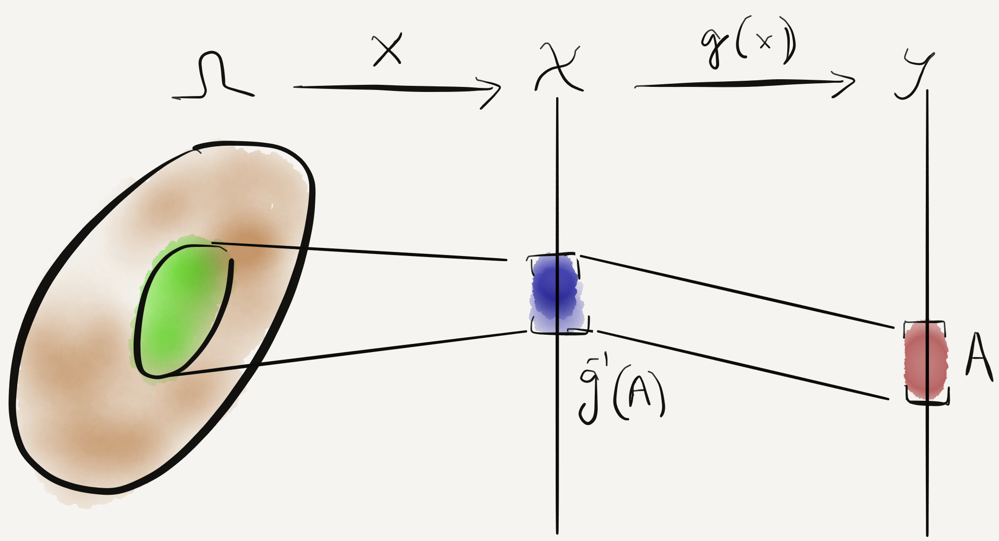
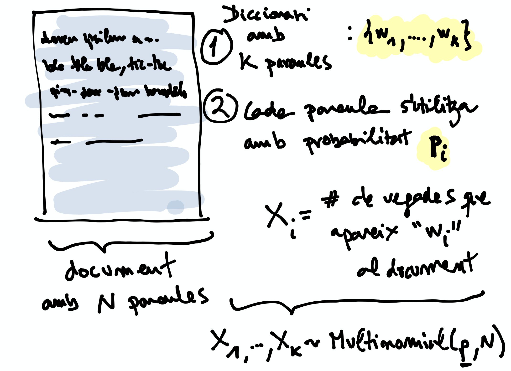
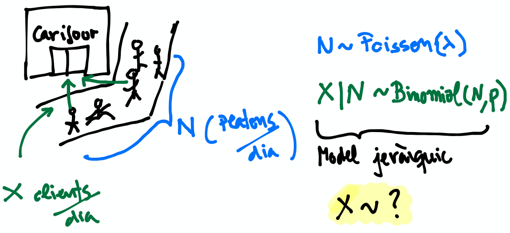

Espais i mesures de Probabilitat
Espai de Probabilitat
Durant el Tema 1 haurem d’anar una mica ràpid. És impossible fer un curs de probabilitat en 2 setmanes, però per sort ja n’heu fet un!
Un espai de probabilitat és un model matemàtic del resultat d’un experiment aleatori.
Consisteix en un triplet \(\left(\Omega, \mathcal{A}, P\right)\):
- \(\Omega\): l’espai mostral, conjunt de resultats possibles d’un experiment
- \(\mathcal{A} \subseteq 2^{\Omega}\): el conjunt d’esdeveniments, una família de subconjunts d’\(\Omega\)
- \(P\): una mesura de probabilitat, una funció \(\mathcal{A} \rightarrow \left[0, 1\right]\)
Recordatori: \(2^{\Omega}\) és el conjunt de tots els sub-conjunts d’\(\Omega\), incloent-hi \(\emptyset\) i \(\Omega\).
Mesura de probabilitat
Una mesura de probabilitat \(P: \mathcal{A} \rightarrow \left[0, 1\right]\) ha de satisfer els següents axiomes (de Kolmogorov):
- \(P\left(\Omega\right)=1\)
- \(\forall A\in\mathcal{A}\), \(P\left(A\right)\geq 0\)
- Per \(A_1,A_2,A_3, \cdots \in \mathcal{A}\) disjunts, \(P\left(\cup_i A_i\right) = \sum_i P\left(A_i\right)\)
Fixeu-vos que tenim llibertat a l’hora de definir \(\mathcal{A}\) pels esdeveniments que ens interessen (sempre i quan formin una \(\sigma\)-àlgebra.)
Mesura de probabilitat (2)
Això és una construcció axiomàtica de Probabilitat, formalitzada per Andrey Kolmogorov.
Noteu que no hem associat cap interpretació al significat físic dels valors de \(P\). Dues interpretacions típiques:
- Frequentista: \(P\left(A\right)\) representa la frequència amb que observariem l’esdeveniment A si realitzéssim un gran nombre d’experiments
- Bayesiana: \(P\left(A\right)\) representa la nostra certesa sobre l’ocurrència de l’esdeveniment A
Note
Les dues interpretacions no són completament ortogonals, però són l’orígen d’un munt de discussions filosòfiques i a vegades dogmàtiques. Si us interessa el tema us recomano Objections to Bayesian statistics.
Aquest no és un curs de probabilitat…
Aquest no és un curs de probabilitat, per tant amagarem “detalls” important sota l’alfombra:
- \(\mathcal{A}\) en realitat ha de ser una \(\sigma\)-àlgebra (conté \(\emptyset\), tancat per unió contable i complement)
- Per a conjunts \(\Omega\) contables, podem tirar milles considerant \(\mathcal{A} = 2^{\Omega}\)
- La cosa es complica quan \(\Omega\) no és discret (exemples: l’alçada d’una població, el nivell d’expressió d’un gen)
Recomano donar una ullada al [Casella & Berger] o a una altra de les referències bibliogràfiques per una intro no tècnica a les \(\sigma\)-àlgebres
Algunes propietats de les mesures de probabilitat
Teorema [Casella & Berger 1.2.8 i 1.2.9] Per una mesura de probabilitat \(P\) i qualsevol esdeveniments \(A, B \in \mathcal{A}\), tenim:
- \(P\left(\emptyset\right)=0\)
- \(P\left(A\right) \leq 1\)
- \(P\left(A^c\right) = 1 - P\left(A\right)\)
- \(P\left(B \cap A^c\right) = P\left(B\right) - P\left(A \cap B\right)\)
- \(P\left(A \cup B\right) = P\left(A\right) + P\left(B\right) - P\left(A \cap B\right)\)
- Si \(A \subseteq B\), aleshores \(P\left(A\right) \leq P\left(B\right)\)
Demostració: Punts (1), (2), (3), exercici :) (recomano començar pel 3er punt). Punts (4)-(6) tot seguit.
Guia de la demostració punts (4)-(6)
Pel punt (4), només cal observar que \(B = \left(B \cap A\right) \cup \left(B \cap A^c\right)\) (exercici). D’aquesta identitat i tenint en compte que \(B \cap A\) i \(B \cap A^c\) son disjunts, s’en dedueix l’expressió usant el 3er axioma de Kolmogorov.
Pel punt (5), utilitzem la següent identitat \(A \cup B = A \cup \left(B \cap A^c\right)\) i apliquem el punt (4).
Finalment el punt (6) el demostrem observant que si \(A \subseteq B\) aleshores \(A \cap B = A\) i que \(0 \leq P\left(B \cap A^c\right) = P\left(B\right) - P\left(A\right)\).
Un parell més de resultats útils
Els següents són propietats interessants relatives a col.leccions de conjunts:
Teorema [Casella & Berger 1.2.11] Si \(P\) és una mesura de probabilitat:
- Per cualsevol partició \(C_1, \cdots, C_N\) d’ \(\Omega\), \(P\left(A\right) = \sum_i P\left(A \cap C_i \right)\)
- \(A_1, A_2 \cdots, \in \mathcal{A}\), \(P\left(\cup_i A_i\right) \leq \sum_i P\left(A_i \right)\) (desigualtat de Boole)
Demostració: (1) tot seguit, (2) exercici.
Demostració punt (1) resultat anterior
Demostració punt (1): Recordem que una partició \(C_1, \cdots, C_N\) d’ \(\Omega\) és una col.lecció de conjunts tal que \(\cup_i C_i = \Omega\) i \(C_i \cap C_j = \emptyset, \forall i\neq j\).
Tenim doncs la següent cadena d’identitats:
\[\begin{split}A &= A \cap \Omega \\
A & = A \cap \cup_i C_i \\
A & = \cup_i \left( A \cap C_i \right)\\
P\left(A\right) & = P\left(\cup_i \left( A \cap C_i\right)\right)\end{split}\]
i com que \(A \cap C_i\) i \(A \cap C_j\) son disjunts, el resultat s’obté considerant el 3er axioma de Kolmogorov.
Exemples d’espais de probabilitat
Experiment 1: Modelar el resultat de llançar un dau de 6 cares
- \(\Omega = \left\{1, 2, 3, 4, 5, 6\right\}\)
- \(\mathcal{A} = \left\{ \left\{1\right\}, \left\{2\right\}, \cdots, \left\{1, 2\right\}, \cdots, \emptyset, \Omega \right\}\)
- \(P\left(x\right) = \frac{1}{6}, x \in \Omega\)
Exercici: Com definirieu \(P\left(A\right)\) per a qualsevol \(A \in \mathcal{A}\)?
- Resposta: \(P\left(A\right) = \sum_{x \in A} P\left(x\right)\). Podeu comprovar que aquesta construcció satisfà els axiomes.
Exemples d’espais de probabilitat (2)
Experiment 2: Escollir 100 persones i fer-els-hi una prova d’anticossos per SARS-COV-2
- \(\Omega = \left\{+, -\right\}^{100}\)
- \(\mathcal{A} = ?\)
- \(P\left(A\right) = ?\)
Experiment 3: Escollir aleatòriament un estudiant d’aquesta classe i mesurar-ne la seva alçada
- \(\Omega = \left[0, \infty \right)\)
- \(\mathcal{A} = ?\)
- \(P\left(A\right) = ?\)
Qüestionari de repàs
- Un espai de probabilitat és el triplet d’un ______________, un ______________ i una _____________.
- Quina dels següents assercions no és un axioma de Kolmogorov:
- Si \(A \cap B = \emptyset\), \(P\left(A \cup B \right) = P\left(A \right) + P\left( B \right)\)
- \(P\left(A\right) \leq 1, \forall A \in \mathcal{A}\)
- \(P\left(A\right) \geq 0, \forall A \in \mathcal{A}\)
- Quin és l’\(\Omega\) i l’\(\mathcal{A}\) del següent experiment: mesurar la vida útil en dies dels ordinadors Macbook Pro.
- Quin és l’\(\Omega\) i l’\(\mathcal{A}\) de l’experiment: llençar un dau fins que treiem un 6.
Independència i probabilitat condicional
Probabilitat condicional
Donats \(A, B \in \mathcal{A}\), amb \(P\left(B\right) > 0\), \(P\left(A|B\right) = \frac{P\left(A \cap B\right)}{P\left(B\right)}\) (aquesta construcció satisfà els axiomes de Kolmogorov)

Probabilitat condicional (2)
\(P\left(\cdot|B\right)\) és la restricció de \(P\) al subconjunt d’esdeveniments B. Alguns preguntes/petits exercicis interessants:
- Tindria sentit definir \(P\left(A|B\right)\) si \(P\left(B\right) = 0\)?
- Si \(A \cap B = \emptyset\), \(P\left(A|B\right)\)?
- Com podem interpretar si \(P\left(A|B\right) =P\left(A\right)\)? Podeu donar un exemple “físic”?
- Si \(A \subseteq B\), quina relació hi ha entre \(P\left(A|B\right)\) i \(P\left(A\right)\)?
Esdeveniments independents
Diem que \(A, B \in \mathcal{A}\), són independents si:
\(P\left(A \cap B\right) =P\left(A\right)P\left(B\right)\)
Això és equivalent a \(P\left(A|B\right) =P\left(A\right)\) si \(P\left(B\right) > 0\).
Algunes preguntes [Casella & Berger Teorema 1.3.9] (mirem de respondre per intució primer i matemàticament després):
- Si \(A, B \in \mathcal{A}\) son independents, què podem dir de \(A, B^c\)?
- Si \(A, B \in \mathcal{A}\) son independents, què podem dir de \(A^c, B^c\)?
Precaució, estimat conductor
Per exemple, l’independència conjunta no implica independència de parells:

Calculem \(P\left(A \cap B \cap C\right)\) i \(P\left(B \cap C\right)\)…
Nota: l’independència de parells tampoc implica independència mútua (veure Problema)
Independència mútua
Per resoldre aquests problemes, fa falta una definició molt més estricta de la noció d’independència en conjunts d’esdeveniments:
Definició \(A_1, A_2 \cdots, \in \mathcal{A}\) són mutualment independents si per cualsevol subcol.lecció \(A_{i_1}, A_{i_2} \cdots, \in \mathcal{A}\), tenim que \(P\left(\cap_j A_{i_j}\right) = \Pi_j P\left(A_{i_j}\right)\)
(En aquest curs, quan parlem de mostres independents, estarem assumint independència mútua)
Variables aleatòries i funcions de distribució
Variable aleatòria
Definició Una variable aleatòria (v.a. pels amics) és una funció \(X : \Omega \to \mathcal{X} \subseteq \mathbb{R}\).
Podem doncs definir una funció de probabilitat [Casella & Berger 1.4.2]:
\(P_X\left(X \in A\right) = P\left(\left\{s\in \Omega: X\left(s\right) \in A \right\}\right)\)
que satisfà els axiomes de Kolmogorov. Aquesta definició es pot especialitzar quan \(\Omega, \mathcal{X}\) són contables:
\(P_X\left(X \in A\right) = \sum_{s\in \Omega: X\left(s\right) \in A } P\left(s\right)\)
Enlloc de treballar amb \(P_X\left(X \in A\right)\), en general caracteritzarem les v.a. a través de les seves funcions de distribució, de massa o de densitat.
Il.lustració d’una v.a. i la seva funció de probabilitat

{kind=link}
Diagrama explicatiu de la identitat \(P_X\left(X \in A\right) = P\left(\left\{s\in \Omega: X\left(s\right) \in A \right\}\right)\). Podem caracteritzar l’esdeveniment \(X \in A\) relatiu a una v.a. \(X\) en funció de l’esdeveniment \(\left\{s\in \Omega: X\left(s\right) \in A \right\}\) en l’espai mostral d’orígen. En aquest curs no ho tindrem en compte, però en realitat no totes les funcions \(X : \Omega \to \mathcal{X} \subseteq \mathbb{R}\) són admissibles, només les mesurables.
Variables aleatòries simplones
Per entendre un concepte, sempre va bé intentar reflexionar primer sobre els casos més extremadament simples.
- Q:Quina seria la v.a. més simple?
- R: La v.a. constant, definida com \(X : \Omega \to 0\)
- Q: I la 2a més simple?
- R: La v.a. de Bernouilli, definida com \(X : \Omega \to \left\{0, 1\right\}\)
Aplicant la definició anterior, tenim que la v.a. de Bernouilli està completament caracterizada per un sol paràmetre \(p = P\left(\left\{s\in \Omega: X\left(s\right) = 1\right\}\right)\)
Exemple de variable aleatòria discreta: binomial
Revisitem l’Experiment 2 anterior (escollim 100 persones i fem una prova d’anticossos per SARS-COV-2)
- Teniem que \(\Omega = \left\{+, -\right\}^{100}\)
- Definim v.a. \(X : \left\{+, -\right\}^{100} \to \mbox{Nombre de +} \in \left[0, 100\right]\)
Exercici: Fent servir l’identitat \(P_X\left(X \in A\right) = \sum_{s\in \Omega: X\left(s\right) \in A } P\left(s\right)\), derivem \(P_X\left(X=k\right)\).
Exemple de variable aleatòria discreta: binomial (2)
Primer determinem el conjunt \(\left\{s\in \Omega: X\left(s\right) \in A\right\}\) sobre el qual haurem de sumar:
\[\begin{split}\left\{s\in \Omega: X\left(s\right) \in A\right\} &= \left\{s\in \Omega: X\left(s\right)= k\right\}\\
&= \mbox{Totes les seqüencies amb exactament k +}\end{split}\]
Fixeu-vos que hi ha \({n \choose k}\) seqüencies amb \(k\) “+” d’entre \(n=100\) individus. Per altra banda, si assumim que cada individu és + de manera independent, tenim que cada seqüència succeeix amb probabilitat \(p^k\left(1-p\right)^{n-k}\).
Per tant deduïm que \(P_X\left(X=k\right) = {n \choose k}p^k\left(1-p\right)^{n-k}\) (distribució binomial)
Què passa si alguns individus són membres d’una mateixa família?
Qüestionari de repàs
- Donat un espai mostral \(\Omega\), quin seria el conjunt d’esdeveniments més “petit”?
- Si \(A \cap B = \emptyset\), vol dir que A, B són esdeveniments independents?
- Quin és l’espai mostral d’una v.a. \(X: \Omega \to \mathcal{X}\)?
- Quina és la probabilitat de la seqüència [+,-,+,-] si \(P\left(+\right)=0.3\) i cada esdeveniment +/- és mutualment independent?
Exemple de variable aleatòria contínua
Revisitem l’Experiment 3. Escollim un estudiant d’aquesta classe i aquest cop mesurem la raó alçada/pes:
- \(\Omega = \left(0, \infty \right) \times \left(0, \infty \right)\)
- \(Z: (x, y) \in \Omega \to \frac{x}{y} \in \left(0, \infty \right)\)
- Com calculariem \(P_Z\left(Z \in A\right)\)? Necessitarem de fer alguna suposició addicional sobre les v.a. X i Y
En la gran majoria de problemes haurem de fer una hipòtesi sobre el model aleatori de les observacions (hipòtesi que després haurem de validar comprovant la bondat de l’ajust)
Funció de distribució
Definició La funció de distribució cumulativa (f.d.c.) d’una v.a. es defineix com \(F\left(x\right) = P\left(X \leq x\right)\).
De fet qualsevol funció pot ser una f.d.c si compleix [Casella & Berger Teorema 1.5.3]:
- \(\lim_{x\to -\infty} F(x) = 0\) i \(\lim_{x\to \infty} F(x) = 1\)
- \(F(x)\) és no-decreixent
- \(F(x)\) és contínua per la dreta (\(\lim_{x\to x_0^+} F(x) = x_0\))
El més important es que la f.d.c caracteritza únicament una variable aleatòria: si \(F_X = F_Y\), aleshores \(X\) i \(Y\) són idènticament distribuïdes [Casella & Berger 1.5.8 i 1.5.10]
Funció de massa o densitat de probabilitat
A voltes ens serà més pràctic treballar amb un altre objecte, la funció de massa de probabilitat (f.m.p.) \(p_X\) o de densitat de probabilitat (f.d.p) \(f_X\).
- Cas discret: \(p_X\left(k\right) = P_X\left(X=k\right)\) (noteu que \(F_X\left(x\right) = \sum_{k=-\infty}^{x}p_X\left(k\right))\))
- Cas “continu”: La funció \(f_X\) tal que \(F_X\left(x\right) = \int_{-\infty}^x f_X\left(t\right)dt\)
- Cas “mixte”: No les podrem caracteritzar amb una f.m.p o una f.d.p, però recordeu que existeixen v.a. que no són discretes ni contínues!
Aquí ens desviem una mica de la notació de [Casella & Berger] al fer servir \(p_X\) enlloc de \(f_X\) per la f.m.p.
Warning
Estem ometent molts “detalls” tècnics importants… Hi ha variables contínues per les que \(f_X\) no existeix.
Funció de massa o densitat de probabilitat (2)
Tal i com hem fist per la f.d.c, tenim un resultat similar per la f.d.p o la f.m.p: \(f_X\left(x\right)\) (\(p_X\left(k\right)\)) és una f.d.p (f.m.p) si i només si [Casella & Berger 1.6.5]:
- \(f_X\left(x\right) \geq 0, \forall x\) (\(p_X\left(k\right) \geq 0, \forall k\))
- \(\int_{\infty}^{-\infty} f_X\left(x\right)dx = 1\) (\(\sum_{\infty}^{\infty} p_X\left(k\right) = 1\))
Per tant podem construir una f.d.p. a partir de qualsevol funció \(h\left(x\right)\) no-negativa, definint:
\(K = \int_{-\infty}^{\infty} h\left(x\right)dx\) (també coneguda com funció de partició)
i \(f_X\left(x\right) = \frac{h\left(x\right)}{K}\). Això es fa servir per exemple en uns objectes anomentats Models Gràfics Probabilístics.
Exemple: funció de distribució i massa d’una v.a. geomètrica
Considerem la variable aleatòria corresponent a l’experiment de llançar una moneda fins que surti cara.
- L’espai mostral és: \(\Omega = \left\{C, XC, XXC, \cdots \right\}\)
- Definim la v.a. \(X\) com el nombre de creus que obtenim abans de la primera cara.
Si suposem que:
- Cada llançament és independent de l’altre (pregunta: podeu imaginar una situació en que no ho fos)
- La probabilitat d’obtenir cara és \(p\)
Podem calcular \(p_X\left(k\right)=?\)
Exemple: funció de distribució i massa d’una v.a. geomètrica
La f.m.p és la distribució geomètrica:
\(p_X\left(k\right) = P\left(\mbox{X}\right)^{k-1}P\left(\mbox{C}\right) = \left(1-p\right)^{k-1}p\)
A partir de la qual podem calcular la f.d.c:
\(F_X\left(x\right) = \sum_{k=1}^x p_X\left(k\right) = \sum_{k=1}^x \left(1-p\right)^{k-1}p\)
utilitzant l’identitat \(\sum_{k=1}^x \rho^{x-1}=\frac{1-\rho^x}{1-\rho}\), podem arribar a:
\(F_X\left(x\right) = 1 - \left(1-p\right)^x\)
Seria interessant que comprovéssiu que \(F_X\left(x\right)\) compleix les condicions per ser una f.d.c.
Propietat memoryless de les v.a. geomètriques
Una v.a. \(X\) és memoryless si:
\(P\left(X > m+n | X > m\right) = P\left(X > n \right)\)
Exercici: Comprovem que aquesta propietat es verifica per la \(p_X\left(k\right)\) geomètrica.
- L’interpretació de la propietat és interessant, per exemple, en el contexte de la loteria: No haver guanyat després de jugar 10 cops no incrementa la probabilitat que guanyem en els següents 10 cops…
- Aquesta propietat no és tant freqüent com podria semblar.
- Aquesta f.m.p és interessant per modelar problemes de temps de vida, per exemple: fallada d’un component electrònic, on la probabilitat de que falli no canvia amb el temps.
Altres v.a. discretes
A través dels exemples, fins ara ja hem vist 4 tipus de variables aleatòries discretes:
- Uniforme, \(X \in \left\{0, \cdots, k-1\right\}\), \(P\left(X = c \right)=\frac{1}{k}\)
- Bernouilli, \(X \in \left\{0, 1\right\}\), \(P\left(X = 1; p \right)=p\)
- Binomial, \(X \in \left\{0, \cdots, n\right\}\), \(P\left(X = k; p, n \right)={n\choose k}p^k\left(1-p\right)^{n-k}\)
- Geomètrica, \(X \in \left\{1, \cdots,\right\}\), \(P\left(X = k; p \right)= p\left(1-p\right)^{k-1}\)
Exercici: podeu trobar un experiment “físic” que es correspongui a cada una de les v.a. anteriors?
Us recomano donar un cop d’ull pel vostre compte a dues distribucions famoses més, la hipergeomètrica i la binomial negativa. Ara donarem una ullada a la de Poisson.
La distribució de Poisson
La distribució de Poisson es pot motivar físicament amb el següent exemple. Suposeu volem modelar # de clients que arriben en un interval T:

- els intervals de temps \(\delta t_i = \frac{T}{N}, N \gg 1\), aleshores \(B_i\) és aproximadament Bernouilli(p)
- els esdeveniments \(B_i\) són independents
La distribució de Poisson (II)
Per tant \(X\) és aproximadament \(\mbox{Binomial}\left(N, p\right)\) on N és el nombre d’intervals en el periòde.
La distribució de Poisson apareix quan tenim que \(p \to 0\) i \(N \to \infty\) mantenint el nombre mig d’arribades per interval de temps fixe, que anomenarem \(\lambda = Np\).
La f.m.p de \(X\) és aleshores, quan \(n \to \infty\):
\[\begin{split}P\left(X = k; \lambda \right) & =\frac{n!}{k!\left(n-k\right)!}\left(\frac{\lambda}{n}\right)^k\left(1-\frac{\lambda}{n}\right)^{n-k} \\
& =\frac{\lambda^k}{k!}\frac{n!}{\left(n-k\right)!}\frac{1}{n^k}\left(1 - \frac{\lambda}{n}\right)^n\left(1-\frac{\lambda}{n}\right)^{-k} \\
& \to \frac{\lambda^k}{k!}e^{-\lambda}\end{split}\]
Exercici: Justificar l’últim pas!
Incís sobre les v.a. contínues
Hem vist que una variable aleatòria contínua es caracteritza per una funció de densitat de probabilitat \(f_X\) tal que:
\(F_X\left(x\right) = \int_{-\infty}^x f_X\left(t\right)dt\)
per tant tenim que
\(P\left(a < X \leq b\right) = \int_{a}^b f_X\left(t\right)dt\)
Una conseqüència d’aquesta definició quan \(b \to a\) és el que pot semblar paradoxal:
\(P\left(X = x\right) = 0\)
Pel 3er axioma de Kolmogorov això sembla implicar que \(P\left(a < X < b\right)\), sent la unió de tots els punts entre a i b, hauria de ser també 0. La paradoxa es resol si recordem que el 3er axioma només contempla unions contables!
La distribució uniforme
La f.d.p més simple es correspon amb la variable aleatòria contínua més simple, escollir un nombre aleatori dins d’un interval \(\left[a, b\right]\):
\(f_X\left(x; a, b\right) = \left\{\begin{array}{cc} \frac{1}{b-a} & a \leq x \leq b \\ 0 & \mbox{altrament} \end{array}\right.\)
Exercicis:
- Calculem la f.d.c d’una variable uniforme.
- Doneu un exemple d’un experiment on l’uniforme és un bon model?
- Com generarieu una variable uniforme amb un ordinador?
La família Gamma
Recordeu que podem definir una f.d.p tot normalitzant qualsevol funció no-negativa.
Considerem la següent família de funcions, parameteritzades per \(\alpha, \beta\) doncs:
\(h\left(t\right) = \frac{t^{\alpha-1}}{\beta^{\alpha}} e^{-\frac{t}{\beta}}\)
definides per \(t\in \left[0, \infty\right)\). Es pot demostrar que per \(\alpha, \beta > 0\),
\(\Gamma\left(\alpha\right)=\int_{0}^{\infty}h\left(t\right)dt\) existeix.
Per tant definim la família distribucions \(\mbox{gamma}\left(\alpha, \beta\right)\) com:
\(f_X\left(x;\alpha, \beta\right) = \frac{1}{\Gamma\left(\alpha\right)}\frac{x^{\alpha-1}}{\beta^{\alpha}} e^{-\frac{x}{\beta}}\)
Cosines germanes de la Gamma
La família Gamma és important perquè permet modelar una gran varietat d’experiments i està intimament relacionada amb altres distribucions:
- Distribució exponencial (si fixem \(\alpha=1\)): la cosina contínua de la f.m.p geomètrica que hem vist abans
- Distribució de \(\chi^2_p\) (si fixem \(\alpha=p/2\) i \(\beta=2\))
La f.d.p de la Gamma per diversos valors de \(\alpha\) (k a l’imatge) i \(\beta\) (\(\theta\) a la figura) [Font]
{kind=link}
La família “Normal”
{kind=link}
\(f_X\left(x ; \mu, \sigma\right) = \frac{1}{\sqrt{2\pi}} e^{-\frac{\left(x - \mu\right)^2}{\sigma^2}}\)
La distribució Normal o Gaussiana és fonamental en estadística, per múltiples raons:
- Apareix “naturalment” quan sumem/calculem el promig d’un gran nombre de mostres
- És simètrica i parameteritzada per 2 paràmetres intuitius (\(\mu\) i \(\sigma\))
- Malgrat la seva aparença intimidant, és tractable analíticament
I què te a veure tot això amb l’estadística?
Note
Com vem comentar a l’introducció al curs, l’inferència estadística és la ciència d’establir propietats d’una població mitjantçant mostres de la mateixa.
Els models probabilístics com els que hem vist darrerament són una de les eines que farem servir per fer aquesta feina d’inferència.
Vegem un exemple pràctic, el de l’Experiment 2 (proves d’anticossos).
- Com hem dit, l’estadística comença amb la recollida de mostres (dades), en aquest cas, realizar tests d’anticossos a 100 persones a l’atzar i anotar-ne el resultat
- El segon pas en estadística paramètrica és la definició d’un model probabilístic que caracteritzi les observacions. Com hem vist abans, un model raonable és que cada una de les 100 mostres és una v.a. de Bernouilli.
- Ara tenim una col.lecció de mostres, \(\left\{x_1, \cdots, x_{100}\right\}\), on cada \(x_i\in \left\{0, 1\right\}\), i un model: \(P_X\left(X_i=1\right) = p\). L’únic que ens falta per poder fer inferència és trobar el valor de \(p\) que millor descriu les observacions (Tema 2). Per exemple un estimador raonable seria la mitjana aritmètica \(\hat{p}=\frac{1}{100}\sum_i x_i= \frac{\mbox{# de +}}{100}\). Posem que \(\hat{p}=0.1\).
I què te a veure tot això amb l’estadística?
Amb aquest estimador, obtingut només a partir de 100 mostres, i gràcies als resultats que veurem en els Temes 1 i 2, ja podríem deduïr propietats de la població en general:
- Veurem que \(\hat{p}\) és un estimador “sense biaix” de \(p\)
- Però també veurem que la variabilitat (ex: variança) de \(\hat{p}\) decreix amb el nombre de mostres, i potser 100 són massa poques…
- També veurem com, a partir de \(\hat{p}\), podem donar un interval de confiança sobre \(p\) (ja hem vist que \(\sum_i x_i \sim \mbox{Binomial}\left(p, 100 \right)\)…)
Però per tot això primer hem d’aprofundir més en alguns altres conceptes de probabilitat: les transformacions de v.a., l’esperança, les distribucions conjuntes i algunes desigualtats.
Funcions de variables aleatòries
Transformacions afins
Sovint ens trobarem que el nostre experiment es pot modelar més fàcilment com la transformació d’una v.a. \(X: \Omega \to \mathcal{X}\) mitjantçant una funció \(g: \mathcal{X}\to\mathcal{Y}\): \(Y=g\left(X\right)\)
Note
Recordem que \(\mathcal{X}\) i \(\mathcal{Y}\) denoten l’espai mostral d’\(X\) i \(Y\), respectivament.
Per exemple, una transformació senzilla és l’afí: \(Y = a + b X\)
En aquest cas, podem expressar la f.d.c \(F_Y\) en funció de \(F_X\):
\[\begin{split}F_Y\left(y\right) &= P\left( a + b X \leq y \right) \\
&= P\left( X \leq \frac{y - a}{b} \right) \\
&= F_X\left(\frac{y - a}{b} \right)\end{split}\]
Exercici: Fent servir aquesta identitat, demostreu que si \(X \sim \mathcal{N}\left(\mu, \sigma\right)\), \(Y = \frac{X - \mu}{\sigma} \sim \mathcal{N}\left(0, 1\right)\)
Cas genèric
Per una funció genèrica, \(g: \mathcal{X}\to\mathcal{Y}\), no serà tan senzill caracteritzar la f.d.c de \(Y\) en funció de la d’\(X\).
Sota unes condicions tècniques relativament generals, podrem definir una funció de probabilitat el conjunt d’esdeveniments associat a l’espai mostral \(\mathcal{Y}\) com segueix:
\[\begin{split}P\left(Y \in A\right) & = P\left(\left\{x \in \mathcal{X}: g\left(x\right) \in A \right\}\right) \\
& = P\left(X \in g^{-1}\left(A\right)\right)\end{split}\]
on definim el mapa invers \(g^{-1}\left(A\right) = \left\{ x\in \mathcal{X}: g(x) \in A\right\}\) [Casella & Berger 2.1.1]
Il.lustració de l’identitat anterior
Vegem la relació entre els tres espais mostrals mitjantçant un diagrama:

{kind=link}
\(P\left(Y \in A\right) = P\left(X \in g^{-1}\left(A\right)\right) = P\left(\left\{ s \in \Omega: X(s) \in g^{-1}\left(A\right) \right\}\right)\)
Sortosament, normalment no haurem de raonar directament sobre \(\Omega\), ja que en molts casos podrem caracteritzar \(Y\) en base a la f.d.c d’\(X\).
F.d.c i transformacions monòtones
En general, la f.d.c. d’\(Y\) vé donada per l’expressió [Casella & Berger 2.1.4]:
\[\begin{split}F_Y\left(y\right) &= P\left( g\left(X\right) \leq y \right) \\
& = P_X\left(\left\{x \in \mathcal{X}: g\left(x\right) \leq y \right\}\right)\end{split}\]
En el cas que la funció \(g: \mathcal{X}\to\mathcal{Y}\) sigui monòtona stricta (creixent o decreixent), tindrem que és injectiva i surjectiva, i per tant podem definir \(g^{-1}: \mathcal{Y}\to\mathcal{X}\) associant un únic x a cada y. Per exemple, en el cas monòton creixent:
\[\begin{split}\left\{x \in \mathcal{X}: g\left(x\right) \leq y \right\} & = \left\{x \in \mathcal{X}: x \leq g^{-1}\left(y\right) \right\} \\\end{split}\]
Per tant podem simplicar l’expressió [Casella & Berger 2.1.3]: \(F_Y\left(y\right) =F_x\left(g^{-1}\left(y\right)\right)\)
Transformacions monòtones i diferenciables
Si ens restringim a v.a’s contínues i a transformacions estrictament monòtones diferenciables:
\[\begin{split}F_Y\left(y\right) &= F_x\left(g^{-1}\left(y\right)\right) \mbox{(g creixent)} \\
F_Y\left(y\right) &= 1 - F_x\left(g^{-1}\left(y\right)\right) \mbox{(g decreixent)}\\\end{split}\]
són diferenciables, i aplicant la regla de la cadena arribem al famós resultat de la “transformació per Jacobià” [Casella & Berger 2.1.5]:
\[\begin{split}f_Y\left(y\right) &= f_x\left(g^{-1}\left(y\right)\right)\left|\frac{d g^{-1}\left(y\right)}{dy} \right| \\\end{split}\]
\(\forall y \in \mathcal{Y} = \left\{y : \exists x\in \mathcal{X}, g(x)=y \right\}\) on \(\mathcal{X} = \left\{x : f_X\left(x\right) > 0 \right\}\).
Veure [Casella & Berger 2.1.8] per una extensió on la funció \(g\) és monòtona només sobre alguns intervals!
Aplicació: derivació de la distribució de \(\chi^2_1\)
Veiem aquí un exemple de com el resultat anterior es pot extendre a transformacions no monòtones interessants en estadística. Considerarem la distribució de la transformació (contínua i diferenciable)
\(Y = X^2\)
quan \(X \sim \mathcal{N}\left(0, 1\right)\). Observem que:
\[\begin{split}F_Y\left(y\right) &= P_X\left(-\sqrt{y} \leq X \leq \sqrt{y}\right) \\
&= P_X\left(X \leq \sqrt{y}\right) - P_X\left(X \leq -\sqrt{y}\right) \\
&= F_X\left(\sqrt{y}\right) - F_X\left(-\sqrt{y}\right)\end{split}\]
Diferenciant i fent servir la simetria de \(F_X\left(x\right)\) respecte 0, obtenim:
\(f_y\left(y\right) = y^{-\frac{1}{2}} f_X\left(\sqrt{y}\right) = \frac{y^{-\frac{1}{2}}}{\sqrt{2\pi}} e^{-\frac{y}{2}}\), que podem identificar amb la Gamma si fixem \(\alpha=1/2\) i \(\beta=2\), que és la \(\chi^2_1\).
Transformació integral
L’última transformació que veurem inspirarà un algoritme per generar mostres de v.a. contínues amb distribucions arbitràries (ho veurem a la primera pràctica).
[Casella & Berger 2.1.10] Sigui \(X\) una v.a. contínua caracteritzada per \(F_X\). Aleshores la v.a. \(Y = F_X\left(X\right)\) és uniforme entre \(\left[0, 1\right]\)
La demostració passa per la definició de la funció:
\(F_X^{-1}\left(y\right) = \left\{\begin{array}{cc} \inf \left\{x : F\left(x\right) \geq y \right\} & y \in \left(0, 1\right) \\ \infty & y=1 \\ -\infty & y = 0 \end{array}\right.\)
I observant que (compte amb el segon “=”!):
\(P\left(Y \leq y \right) = P\left(F_X\left(X\right) \leq y\right) = P\left(X \leq F_X^{-1}\left(y\right)\right) = y\)
Qüestionari de repàs
- Quines condicions ha de verificar una f.d.p o una f.m.p?
- Si compro un dècim de loteria de nadal cada any, i hi ha 170M de dècims, quina és la probabilitat que no em toqui en tota la vida?
- Les v.a. són contínues o discretes segons si la seva \(F_X\) és contínua o discreta: cert o fals?
- Per què el fet que una v.a. contínua satisfaci \(P(X=x)=0\) no implica que \(P(a < X \leq b)=0\)?
- La distribució de Poisson és un bona aproximació de la binomial quan ______ i ________.
- Per demostrar el teorema de la transformació integral, hem definit \(F_X^{-1}\left(y\right) = \inf \left\{x : F\left(x\right) \geq y \right\}, y \in (0, 1)\). Perquè l’infimum i perquè el >=?
- En quins 4 casos podem caracteritzar fàcilment una variable \(Y=g(X)\) en funció de la distribució de X?
Esperança i moments
Esperança
L’esperança o mitja d’una v.a. \(g\left(X\right)\) es defineix com:
- Cas continu: \(E\left(g\left(X\right)\right) = \int_{-\infty}^{\infty} g\left(x\right)f_X\left(x\right)dx\)
- Cas discret: \(E\left(g\left(X\right)\right) = \sum_{k} g\left(k\right)p_X\left(k\right)\)
Com ja sabeu, l’esperança pot ser un indicador de “localització” però depèn de la dispersió (ex: variança) de la distribució en questió…
Aquesta definició es coneix com la Llei de l’Estadístic Inconscient, perquè en realitat l’existència de \(E\left(g\left(X\right)\right)\) s’hauria de provar formalment. Recordeu doncs que l’esperança no té perquè existir! L’exemple clàssic és \(g(x)=x\) i amb una distribució de Cauchy.
Exercici: Podeu imaginar una distribució on l’esperança ens pot donar una idea equivocada?
Esperança
L’esperança i la mitja aritmètica són cosines germanes. La següent és una interpretació de la mitja que pot ser útil:
{kind=link}
Per tant \(\bar{X} = \sum_{i} c_i \frac{\mbox{#}\left\{x=c_i\right\}}{N} = \sum_{i} c_i \hat{P}\left(X = c_i\right)\) (S’assembla a l’esperança, no?)
Exemple de càlcul d’esperances: v.a. de Poisson
El càlcul l’esperança sol dependre una mica de la forma de la f.d.p o f.m.p de la v.a. en questió.
Vegem com ho fariem per la f.m.p de Poisson:
\(P\left(X = k; \lambda \right) = \frac{\lambda^k}{k!}e^{-\lambda}\)
Aplicant la definició:
\[\begin{split}E(X) & = \sum_{k=0}^{\infty} k \frac{\lambda^k}{k!}e^{-\lambda} \\
& = \lambda e^{-\lambda} \sum_{k=1}^{\infty} \frac{\lambda^{k-1}}{\left(k-1\right)!} \\
& = \lambda\end{split}\]
On hem fet servir l’identitat \(\sum_{j=0}^{\infty} \frac{\lambda^{j}}{j!}=e^{\lambda}\)
Exemple de càlcul d’esperances: menys logaritme d’una v.a. uniforme
Suposem \(X \sim U[0, 1]\) i \(Y=-\log(X)\):
- Podem calcular \(E(Y)\) adonant-nos que \(F_Y(y)=P(Y \leq y) = 1 - e^{-y}\), per tant Y es exponencial amb paràmetre \(\lambda=1\)
- Podem calcular \(E(Y) = \int_{0}^1 -\log(x)dx=x - \log(x)|^1_0=1\)
En alguns casos podem escollir entre fer servir la definició amb \(g(x)\) o bé calcular la f.d.p de \(Y=g(X)\) per calcular-ne \(E(Y)\).
Propietats de l’esperança
La majoria de propietats de l’esperança provenen de la linearitat de l’operador integració/suma [Casella & Berger 2.2.5]*:
- \(E\left(a X + b Y + c\right) = aE\left( X\right) + b E\left( Y\right) + c\)
- Si \(X \geq Y\), aleshores \(E\left(X\right)\geq E\left(Y\right)\)
- Si \(a\geq X \geq b\), aleshores \(a \geq E\left(X\right)\geq b\)
Demostració (1) i (2) a la pissarra, (3) com exercici
*Nota: En realitat, a [Casella & Berger 2.2.5] contemplen només el cas \(X=g_1(x)\) i \(Y=g_2(X)\). Aquí farem una mica de trampa i farem servir ja les distribucions marginals d’\(X\) i \(Y\) que encara no hem definit però definirem més endavant.
Aplicació de la linearitat de l’E: Cupons
Tot i que podria semblar un resultat trivial, la linearitat de l’esperança és una propietat molt útil a la pràctica. Vegem per exemple la seva aplicació en el següent problema:
[Rice 4.1.2 Exemple B] Tenim \(n\) tipus diferents de cupons, i cada cop que comprem cereals ens en donen un dels \(n\) a l’atzar. Quans cereals haurem de comprar per aconseguir-los tots?
- Definim \(X_i\) nombre de compres fins que aconseguim el cupó i
- El nombre total de compres \(Y=\sum_{i=1}^n X_i\)
- Noteu que \(X_i\) es una v.a. geomètrica, amb paràmetre \(p_i = \frac{n -i + 1}{n}\)
- Recordem que en aquest cas \(E(X_i) = \frac{1}{p_i}\)
- Per linearitat de l’esperança \(E(Y)=\sum_{i=1}^n E(X_i) = \frac{n}{n} + \frac{n}{n-1} + \cdots + n = n\sum_{i=1}^n\frac{1}{i}\)
Aplicació de la linearitat de l’E: Optimització d’inversions
[Rice 4.1.2 Exemple E] Suposeu que tenim una cartera d’inversió amb dues accions A i B de borsa amb retorns representats per v.a.’s \(R_A\) i \(R_B\).
- Si invertim una fracció \(\pi\) del nostre capital a A, i \(1-\pi\) a B, tindrem que el retorn final serà: \(R = \pi R_1 + \left(1 - \pi\right)R_2\)
- Per linearitat de l’esperança, \(E(R) = \pi E(R_A) + \left(1 - \pi\right)E(R_B)\)
- Per tant l’estratègia òptima d’inversió seria \(\pi=1\) si \(E(R_A)>E(R_B)\) i \(\pi=0\) en cas contrari
Fixeu-vos que una possible correlació entre \(R_A\) i \(R_B\) és irrellevant…
Clarament la gestió de carteres és més complicada que això… què creieu que falla en el nostre model?
Moments i moments centrals
A partir de l’esperança podem definir altres quantitats caracteritzant una v.a. [Casella & Berger 2.3.1]. Per tot enter \(n\), definim:
- El moment d’ordre \(n\) com: \(\mu_n' = E(X^n)\)
- El moment central d’ordre \(n\) com: \(\mu_n = E\left(\left(X - E(X)\right)^n\right)\)
(que recordem no tenen perquè existir!)
Exemples:
- \(\mu_0'=1\), \(\mu_1=0\)
- La variança, \(\mbox{Var}\left(X\right) = \mu_2\), que indica la desviació d’X respecte la seva mitja
- L’asimetria (skewness) \(\mu_3\) que ens indica si la cua de la f.d.p està a l’esquerra (<0) o a la dreta (>0) de la mitja
L’esperança com a predictor de mínim error quadrat
Amb aquesta última definició podem establir una propietat fonamental de l’esperança. Considerem el següent problema de predicció d’una v.a. X tal que minitzem l’error de predicció [Casella & Berger 2.2.6]:
Trobar \(\theta\) tal que \(\min_{\theta} E\left(X - \theta \right)^2\).
Observem:
\[\begin{split}E\left(X - \theta \right)^2 &= E\left(X - E(X) + \left(E(X) - \theta\right)\right)^2 \\
&= E\left(X - E(X)\right)^2 + E\left(E(X) - \theta\right)^2 + \\
& + 2E\left(X - E(X)\right)E\left(E(X) - \theta\right) \\
&= \mbox{Var}\left(X\right) + E\left(E(X) - \theta\right)^2 \geq \mbox{Var}\left(X\right)\end{split}\]
(pel tercer “=”, \(E\left(X - E(X)\right)=0\).) Per tant \(\theta^*=E(X)\)!
Funció generatriu de moments
Per una v.a. X, la funció generatriu de moments (f.g.m) (Moment-Generating Function) es defineix com:
\(M_X\left(t\right)=E\left(e^{tX}\right)\)
suposant que existeix per \(t\in [-\epsilon, \epsilon]\) amb \(\epsilon>0\).
En estadística, la f.g.m es fa servir majoritàriament per tres raons:
- Calcular els moments d’una distribució que altrament serien molt difícils de calcular, veure [Casella & Berger 2.3.7 i 2.3.8], per exemple els moments d’una Gamma.
- Per calcular distribucions de transformacions afins de v.a. [Casella & Berger 2.3.15]
- Per calcular la distribució de la suma de v.a. independents [Casella & Berger 4.2.12]
Funció generatriu de moments (2)
En aquest curs la farem servir més endavant per l’objectiu (3).
Per ara, només mencionar que aquesta utilitat es deriva d’un resultat fonamental per les f.g.m’s, que és que sota algunes condicions, la f.g.m caracteritza inequívocament una f.d.c:
[Casella & Berger 2.3.11] Siguin \(F_X\), \(F_Y\) f.d.c’s per les quals tots els moments existeixen. Aleshores \(M_X\left(t\right)=M_Y\left(t\right)\) per \(t\in [-\epsilon, \epsilon]\) amb \(\epsilon>0\) implica que \(F_X = F_Y\).
És aquest resultat el que ens permetrà més endavant de calcular una f.g.m i a partir d’aquesta desfer el camí i obtenir-be la f.d.c. corresponent.
Desigualtats
Desigualtat de Markov
La desigualta de Markov estableix que, per qualsevol v.a. \(X \geq 0\), tal que \(E(X)\) existeix, podem acotar la probabilitat de que \(X\) excedeixi un cert valor \(t > 0\) per:
\(P(X \geq t) \leq \frac{E(X)}{t}\)
Per exemple, si fixem \(t = kE(X)\), podem acotar la proba que \(X\) excedeixi la seva mitja per un factor k:
\(P(X \geq k E(X)) \leq \frac{1}{k}\)
Demostració:
Descomposar \(E(X)=\int_{-\infty}^t x f_X(x)dx + \int_t^{\infty} x f_X(x)dx\) i observar que \(\int_{-\infty}^t x f_X(x)dx \geq 0\) i \(\int_t^{\infty} x f_X(x)dx \geq t P(X\geq t)\)
Desigualtat de Txebitxev
La desigualtat de Markov és molt laxa perquè només fa servir informació sobre \(E(X)\). La seva extensió (desigualtat de Txebitxev) ens permetrà establir cotes una mica més útils. Sigui v.a. \(g(X) \geq 0\), tal que \(E(g(X))\) existeix, per qualsevol \(t > 0\) tenim:
\(P(g(X) \geq t) \leq \frac{E(g(X))}{t}\)
A priori això sembla calcat a la de Markov, però vegem-ne una aplicació:
Sigui \(X\) una v.a. amb mitja \(\mu\) i variança \(\sigma^2\). Aleshores \(P(|X - \mu| \geq k \sigma) \leq \frac{1}{k^2}\)
Demostració: Per demostrar Txebitxev, es segueix la mateixa idea que per Markov. Per demostrar-ne aquesta aplicació, n’hi ha prou amb aplicar Txebitxev amb \(g(x) = \left(\frac{x - \mu}{\sigma}\right)^2\)
Desigualtat de Jensen
L’última desigualtat que considerarem és la de Jensen, que sota la seva simplicitat amaga moltíssim poder.
Sigui \(g(x)\) una funció convexa i \(X\) una v.a. tal que \(E(g(x))\) existeix. Aleshores:
\(E(g(x)) \geq g(E(X))\)
Aplicacions: Moltíssimes, però dues d’immediates són les d’obtenir cotes, per exemple:
- \(E(X^2) \geq (E(X))^2\)
- \(E(\frac{1}{X}) \geq \frac{1}{E(X)}\)
Demostració: A la pissarra
Vectors aleatoris / Variables multivariades
Variables multivariades
Una variable aleatòria multivariada és una extensió d’una v.a. a múltiples dimensions:
Definició Una variable aleatòria multivariada (v.m. pels amics) és una funció \(\mathbf{X} : \Omega \to \mathcal{X} \subseteq \mathbb{R}^K\).
Exemples:
- V.m. contínua: Mesurem l’alçada, pes i perímetre cranial dels nadons al néixer. Cada mostra es pot interpretar com una v.m. contínua de dimensió 3, que pren valors en \(\mathbb{R}^3\).
- V.m. discreta: Agafem un document de text i en contem el nombre de vegades que apareixen \(K\) paraules d’un diccionari. El resultat és un vector discret que pren valors a \(\mathbb{N}^K\)
Funció de densitat o de massa de probabilitat conjuntes: Cas bivariat
De manera anàloga al que hem vist per v.a.’s, ver una v.m \((X, Y)\) també podem definir:
- Una funció de massa de probabilitat conjunta: \(p_{X,Y}(x, y)\) si \(\mathcal{X}\) contable
- Una funció de distribució de probabilitat conjunta: \(f_{X,Y}(x, y)\) si \(\mathcal{X}\) incontable
Per tal de ser vàlides aquestes funcions han de verificar:
- \(p_{X,Y}(x, y) \geq 0\), \(\sum_{x, y \in \mathcal{X}}p_{X,Y}(x, y)=1\)
- \(f_{X,Y}(x, y) \geq 0\), \(\int\int_{x, y \in \mathcal{X}}f_{X,Y}(x, y)=1\)
Durant aquest repàs, presentarem els conceptes només pel cas bivariat (\(N=2\)), l’extensió a \(K>2\) és gairebé immediata [Casella & Berger 4.6]
Funció de densitat o de massa de probabilitat conjuntes: Cas bivariat (2)
La f.m.p. o la f.d.c. es poden utilitzar per caracteritzar la probabilitat d’un esdeveniment \(A\) (omitirem el cas discret):
\(P((X, Y) \in A) = \int\int_{x, y \in A} f_{X,Y}(x,y)dx dy\)
Exemple: \((X,Y)\) són les coordenades d’arribada d’un dard llançat en un tauler de radi \(r >0\).
Si suposem que sóm uniformement dolents llançant dards, podem caracteritzar la f.d.p com una uniforme en el cercle de radi \(r\):
\(f(x,y) = \left\{\begin{array}{cc}\frac{1}{\pi}&\mbox{ si } x^2 + y^2 \leq 1 \\ 0 &\mbox{ altrament } \end{array}\right\}\)
Exercici: Calculeu \(P((X, Y) \in A)\) per \(A = \left\{x, y: t \leq x^2 + y^2 \leq 1\right\}\)
Distribucions marginals
A vegades voldrem caracteritzar només un dels components d’un vector aleatori \((X, Y)\).
Per exemple, si volem calcular \(P(X \in A_x)\).
Per fer-ho, farem servir el que s’anomena la f.d.p marginal d’X:
\(f_X(x) = \int_{-\infty}^{\infty} f_{X,Y}(x, y) dy\) (cas continu)
o:
\(p_X(x) = \sum_{k} f_{X,Y}(x, k) dy\) (cas discret)
Exemple: Quina és la probabilitat que el dard de l’exemple anterior caigui en la regió \(-1\leq y \leq 1\) (\(r>1\)).
És important recordar que les marginals no contenen tota la informació que hi ha en la conjunta!
Exemple de variable multivariada discreta: multinomial
Considerem ara un exemple d’una v.m. discreta per \(K \geq 2\):
- Suposeu un experiment en que cada realització pren un entre \(K\) valors discret, amb probabilitats \(p_i\), \(i=1,\cdots,K\), \(\sum_i p_i = 1\).
- Repetim l’experiment \(N\) vegades, cada realització és mutuament independent amb les altres
- Definim la v.m. \(\mathbf{X}=\left[X_1, \cdots, X_K\right]\) com un vector on cada element \(X_i\) conta el nombre de vegades que hem observat el valor \(i\)
Aleshores la v.m \(\mathbf{X}\) segueix una distribució multinomial [Casella & Berger 4.6.2]
\(p_{X_1, \cdots, X_K}\left(x_1, \cdots, x_K\right) = N!\Pi_{i=1}^{K}\frac{p_i^{x_i}}{x_i!}\)
Exemple de variable multivariada discreta: multinomial (2)
És obvi que \(p_{X_1, \cdots, X_K}\left(x_1, \cdots, x_K\right)\geq 0\). Per demostrar que això és efectivament una f.m.p, haurem d’aplicar el Teorema Binomial [Casella & Berger 4.6.4], que diu que
\(\left(p_1 + \cdots + p_N\right)^N = N!\Pi_{i=1}^{K}\frac{p_i^{x_i}}{x_i!}\)
i això és igual a 1 ja que \(p_1 + \cdots + p_N=1\).
Fixeu-vos que:
- Si K=2, \(X_1\) segueix una distribució binomial amb paràmetres \(p_1, N\) (i \(X_2\) també!)
- La f.m.p. de qualsevol \(X_i\), és també una binomial (Exercici!)
Exemple d’aplicació: modelització de documents de text

{kind=link}
Això es coneix com el model “Bag-of-Words” d’un document
Funció de distribució cumulativa conjunta
Som seria d’esperar, en el cas multivariat també podem definir una f.d.c conjunta. Per exemple, per \(N=2\) i una v.m. \((X, Y)\):
\(F_{X,Y}(x, y) = P(X \leq x, Y \leq y)\)
Cosa que en el cas continu, i en el cas que \(f_{X,Y}\) existeixi, implica:
\(F_{X,Y}(x, y) = \int^x_{-\infty}\int^y_{-\infty} f_{X,Y}(x',y')dx'dy'\)
Les f.d.c són una mica menys útils en el cas multivariat ja que “només” ens serveixen per calcular probabilitats d’esdeveniments “rectangulars”
Funció de distribució de probabilitat i massa condicionals
De manera anàloga al que vam definir per a probabilitats d’esdeveniments, podem definir f.d.p.’s o f.m.p’s condicionals.
Considero només el cas continu (pel cas discret la definició és la mateixa però intercanviat \(f\) per \(p\)). Per qualsevol \(y\) t.q. \(f_Y(y) > 0\) definim la f.d.p condicional donat \(Y=y\) com [Casella & Berger 4.2.1 i 4.2.3]:
\(f_{X|Y=y}(x) = \frac{f_{X,Y}(x,y)}{f_Y(y)}\)
Si \(X\) segueix la distribució \(f_{X|Y=y}(x)\) direm que \(X | Y=y \sim f_{X|Y=y}\) (sovint omitirem \(y\))
En realitat fixeu-vos que \(f_{X|Y}(x)\) és una família de distribucions: per cada possible valor d’\(Y\) tenim una \(f_{X|Y}(x)\) diferent.
Llei de la probabilitat total
La f.d.p condicional ens permet desenvolupar una expressió equivalent a la llei de la probabilitat total que vem veure per esdeveniments [Casella & BErger 1.2.11], [diapo 9, punt (1)].
L’idea és expressar una marginal en funció de la condicional:
\(f_{X}(x) = \int^{\infty}_{-\infty} f_{X,Y}(x,y)dy = \int^{\infty}_{-\infty} f_{X|Y=y}(x)f_Y(y)dy\)
(una expressió similar es pot obtenir pel cas discret, remplaçant les integrals per sumes i \(f\) per \(p\))
Aquesta expressió és molt útil per caracteritzar models jeràrquics, com veurem a continuació.
Exemple de model jeràrquic: Poisson-Binomial

{kind=link}
Exemple de model jeràrquic amb dos nivells: Modelem les entrades de peatons en una tenda, com un model poisson-binomial. Quina és la distribució d’\(X\)?
Exemple de model jeràrquic: Poisson-Binomial (2)
Gràcies a la “lei de la probabilitat total” que acabem de veure, podem derivar la distribució d’\(X\)
\[\begin{split}p_{X}(k) & = \sum_{n=0}^\infty p_N(n) p_{X|N=n}(k) \\
& = \sum_{n=k}^\infty \frac{\lambda^n e^{-\lambda}}{n!} {n \choose k}p^{k}\left(1 - p\right)^{n-k}\\
& = \frac{\left(\lambda p\right)^k}{k!}e^{-\lambda p}\end{split}\]
Per tant \(X \sim \mbox{Poisson}\left(\lambdap\right)\)
Exercici: demostrar com es passa de la 2a la 3a igualtat.
Esperança condicional
Gràcies a la f.d.p. i la f.m.p. condicionals, podem definir l’eperança condicional, que juga un rol important en estadística com veurem tot seguit.
\(E(X|Y=y) = \int x f_{X|Y=y}(x) dx\)
Noteu que a diferència de l’esperança “normal”, l’esperança condicional és una variable aleatòria, ja que és una funció d’\(Y\)!
De fet, podem utilitzar l’esperança condicional per calcular l’esperança d’\(X\), gràcies al que a vegades s’anomena la “llei de l’esperança total” (en referència a la llei de la probabilitat total) [Casella & Berger 4.4.3]:
\(E(X) = E(E(X|Y))\)
Adoneu-vos que l’esperança “exterior” és respecte \(Y\)! Demostració com a exercici.
Esperança condicional (2)
Aquesta última fórmula es pot fer servir per calcular esperances que altrament serien molt complicades. Per exemple, considereu el següent model probabilístic:
- Tenim \(X_i\) tals que \(E(X_i) = \mu\), \(i=1, \cdots, N\)
- \(N\) és una v.a. independent d’\(X_i\), amb \(E(N) = \nu\)
- Volem caracteritzar \(T = \sum_{i=1}^N X_i\)
(Per exemple, \(X_i\) podria referir-se al gasto d’un client i \(N\) al nombre de clients que entren a una web. \(T\) seria els ingressos totals.)
Gràcies a l’expressió \(E(T) = E(E(T|N))\), i fent servir una propietat que veurem tot seguit sobre v.a.’s independents, tenim:
\(E(T) = E(N)E(X) = \mu \nu\).
I això sense saber res d’\(f_{X_1, \cdots, X_N, N}\)!